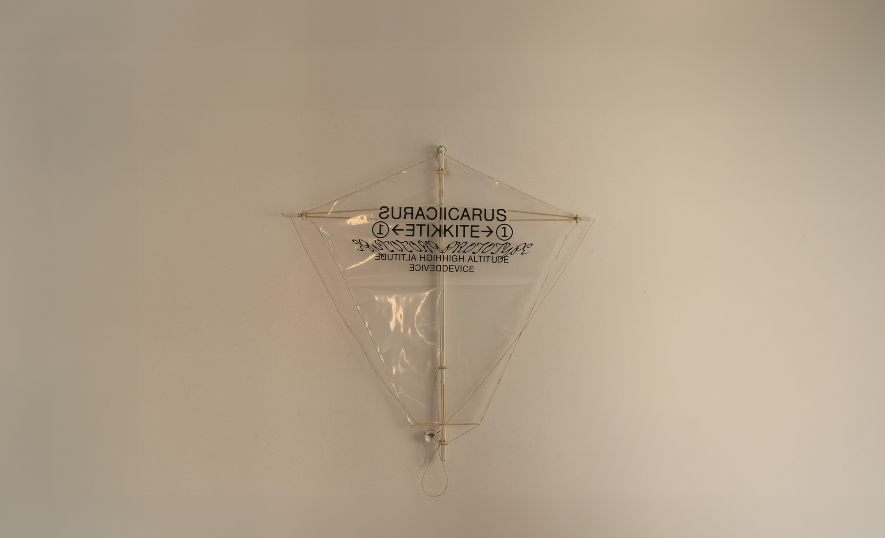
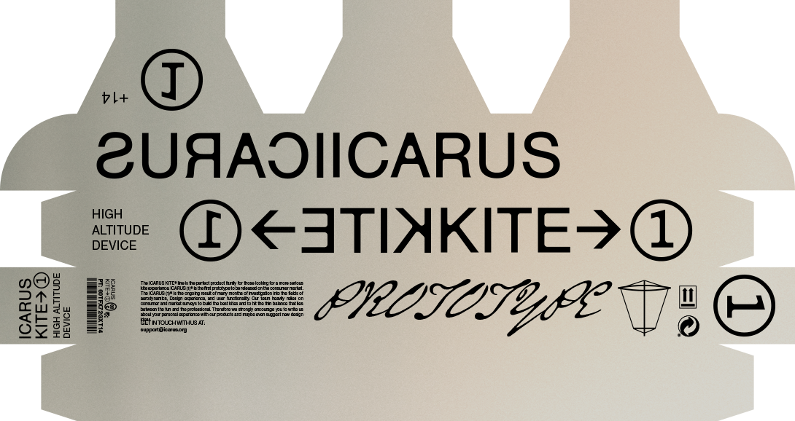
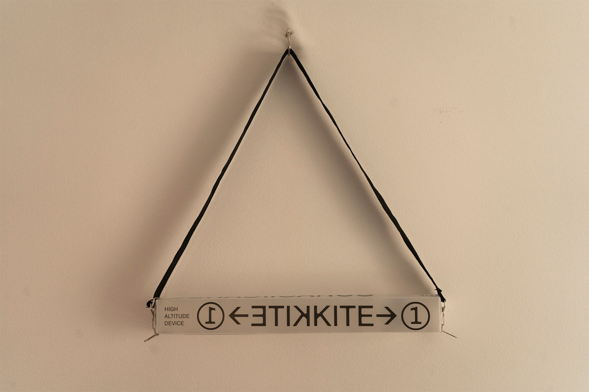
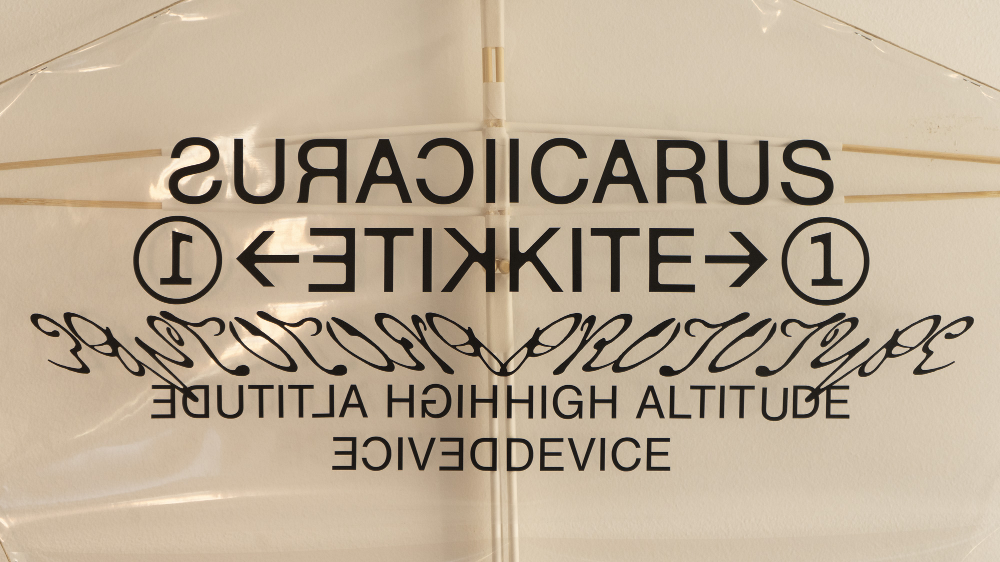
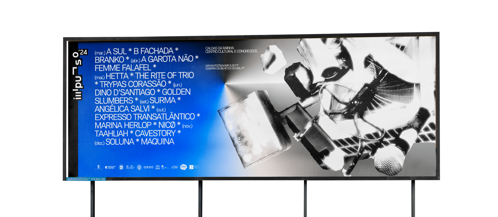
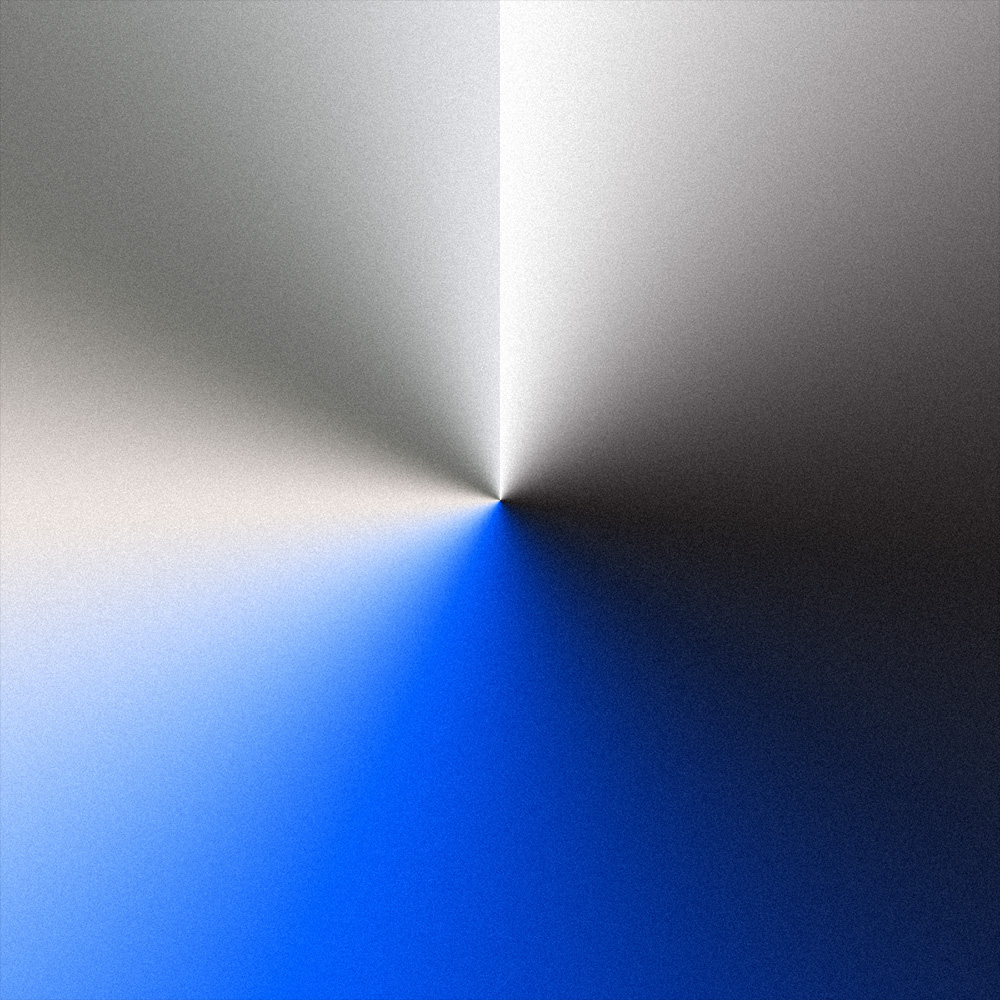
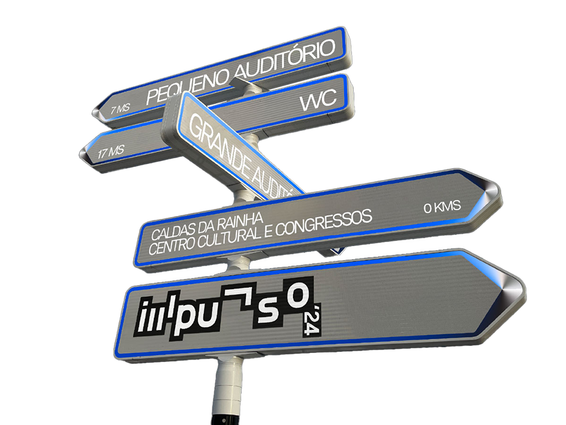

Miguel Santos
Designer
Gráfico
Hendrick's & Gao Hang
Icarus Kite (1)
Festival Impulso 2024
Korp Mono
Scopic Display
Abaladiça
Ética e Design - Mário Moura
About
Contact
Index
About
Contact
Index




Korp Mono©
##:##:##
A
B
C
D
E
F
G
H
I
J
K
L
M
N
O
P
Q
R
S
T
U
V
W
X
Y
Z
1
2
3
4
5
6
7
8
9
0
+
-
(
)
*


